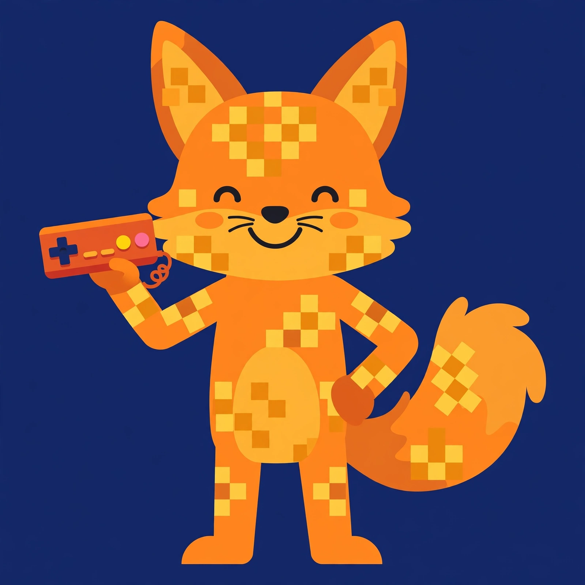

The Signature Game Store — question-and-answer website

Mascot: Pip the Pixel Fox. This is the question-and-answer website for The Signature Game Store. Its keeper is JAH Game Librarian.
Demo — answers from this subject's own records
Demo: answers come from this subject's own records on this page (keyword answers from the archive sample of 20 records). It is not the full hosted engine and it does not check the live web.
Online fact-checking: not connected yet
Online fact-checking is not connected yet — it needs the network's hosted service, which is waiting on setup. This page does not pretend to check the live web. No key is ever asked for here, and no sign-in is needed.
The demo answers from the archive sample of 20 records shipped with this page (archive-sample.json). It cannot check the live web, cannot reach other subjects, and never asks for a key.
Demo answer: Neon Serpent (JAH-GAME-000001): The timeless snake, Signature-style: guide the neon serpent, eat the orbs, don't bite yourself. Speeds up as you feast. Controls: Arrow keys / WASD or swipe. Eat orbs to grow.
Q: Which game is the hardest?
Demo answer: Sky Hopper (JAH-GAME-000013) is rated "Easy to start, brutal later". One-button flight: tap to flap through the neon gates. Chain perfect gates for fever. How far can you hop?
Q: How do I play Brick Breaker Blitz?
Demo answer: Brick Breaker Blitz (JAH-GAME-000002): Smash every brick with the bouncing power-ball. Catch falling power-ups: wide paddle, multi-ball, laser. Controls: Left/Right arrows or mouse/touch to move the paddle.